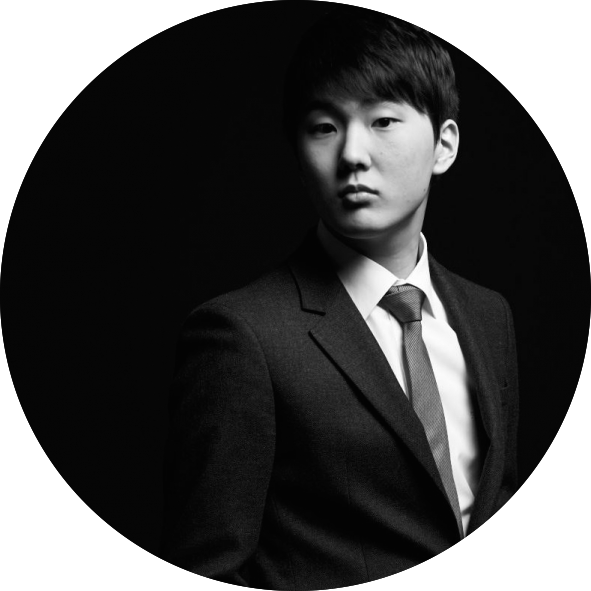

Carnegie Hall Presents
Seong-Jin Cho
Piano Performance
Wednesday, February 22, 2017 at 8PM
Stern Auditorium / Perelman Stage
When Seong-Jin Cho won the 17th International Chopin Piano Competition in 2015, he joined the august company of such prior winners as Martha Argerich, Maurizio Pollini, and Garrick Ohlsson. The Telegraph wrote of Cho's "unequivocally brilliant" performance at the competition's celebratory concert, and the Financial Times praised his "lucid and shimmering" sound. Cho makes his Carnegie Hall debut in a concert that will thrill all lovers of great pianism.

Performer
Seong-Jin Cho, Piano
NY Recital Debut
First Prize Winner, 17th International Chopin Piano Competition (2015)
Program
Berg Piano Sonata, Op. 1
Schubert Piano Sonata in C Minor, D. 958
Chopin 24 Preludes, Op. 28